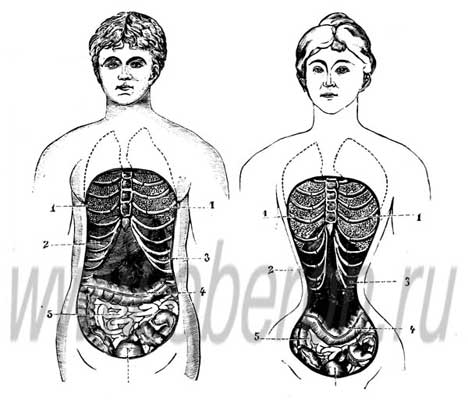
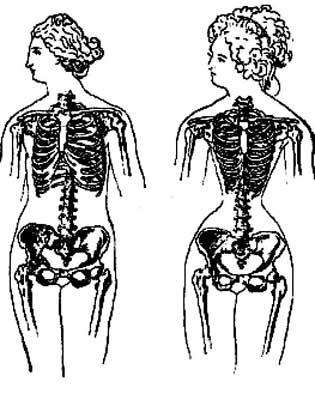

|
Мнение
врачей о корсете
|
|
|
Первыми, кто осмелился восстать против корсета, были врачи. Именно
гигиенисты доказали, что ношение корсета способствует
острому кислородному голоданию, подобному тому, что человек переживает
на большой высоте в горах. Было издано множество статей и монографий о вреде
корсетов. Когда появился рентген, врачи сравнили два снимка: ребра крестьянки,
которая никогда корсета не носила, и аристократки, которая не снимала его
с 14 лет. Увиденное произвело фурор: во втором случае четыре нижних ребра
поменяли форму. Это означало, что постоянное ношение корсетов не только деформирует линию талии, но и приводит к смещению внутренних органов, нарушению их работы, малокровию, чахотке, головокружению и обморокам. Как ни странно, многие дамы не собиралось отказываться от своего любимца и утреннее одевание превращалось в процесс наложения оков на целый день. Правда, корсеты стали более прогрессивные и щадящие «эластичные». Лишь самые отважные «эмансипе» корсета не носили. |
|
|
 |
 |
|
Вопросы
для самопроверки
|
|
| 1.
К каким последствим проводило постоянное ношение корсета? 2. В связи с каким открытием стало известно о последствиях ношения корсетов? |
|